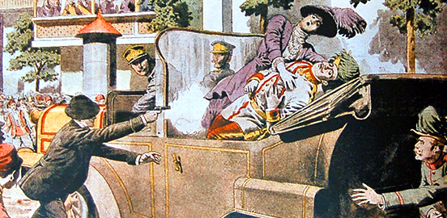
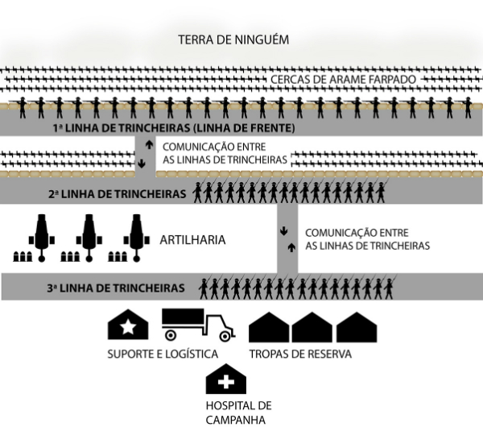
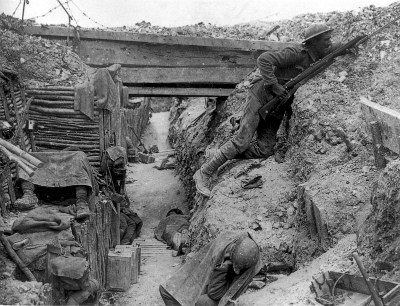
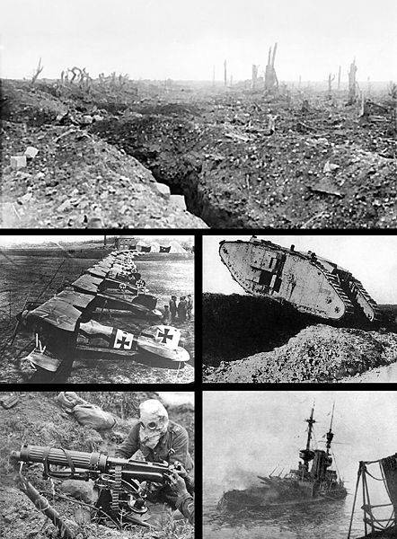

A Primeira Guerra Mundial, que durou de 1914 a 1918, foi considerada por muitos de seus contemporâneos como a mais terrível das guerras. Por este motivo, tornou-se conhecida durante muito tempo como “A Grande Guerra”. Para se compreender os motivos de ter sido uma guerra tão longa e de proporções catastróficas é necessário relembrar alguns aspectos do cenário político e econômico mundial das últimas décadas do século XIX.
Na segunda metade do século XIX, a junção entre capitalismo financeiro e capitalismo industrial proporcionou a integração econômica mundial, favorecendo assim, principalmente, as nações que haviam começado seu processo de industrialização. Essas mesmas nações expandiram significativamente seu território em direção a outros continentes, sobretudo ao Asiático, ao Africano e à Oceania. A Inglaterra, por exemplo, integrou grandes países ao seu Império, como a Índia e a Austrália. Todo esse processo é conceitualmente tratado pelos historiadores como Imperialismo e Neocolonialismo. Nesse cenário se desencadearam os principais problemas que culminaram no conflito mundial.
No início da década de 1870, a Alemanha promovia sua unificação com a Prússia e, ao mesmo tempo, enfrentava a França naquela que ficou conhecida como Guerra Franco-Prussiana. Ao vencer a França, a Alemanha possou a ter posse sobre uma região rica em minério de ferro, que foi importantíssima para o desenvolvimento de sua indústria, incluindo a indústria bélica. Tratava-se da região de Alsácia e Lorena. A França, na década posterior à guerra contra a Alemanha, desenvolveu um forte sentimento de revanche, o que provocava uma enorme tensão na fronteira entre os dois países. A tensão se agravou quando Otto Von Bismarck, o líder da unificação alemã, estabeleceu uma aliança com a Áustria-Hungria e com a Itália, que ficou conhecida como Tríplice Aliança. Essa aliança estabelecia tanto acordos comerciais e financeiros quanto acordos militares.
A França, que se via progressivamente ameaçada pela influência que era estabelecida pela Alemanha, passou a firmar acordos, do mesmo gênero da Tríplice Aliança, com o Império Russo, czarista, em 1894. A Inglaterra, que era um dos maiores impérios da época e também se resguardava do avanço alemão e temia sofrer perdas de território e bloqueios econômicos, acabou se aliando à França e à Rússia, formando assim a Tríplice Entente.
• - A partilha das terras da África e Ásia, na segunda metade do século XIX, gerou muitos desentendimentos entre as nações europeias.
Enquanto Inglaterra e França ficaram com grandes territórios com muitos recursos para explorar, Alemanha e Itália tiveram que se contentar com poucos territórios de baixo valor. Este descontentamento ítalo-germânico permaneceu até o começo do século XX e foi um dos motivos da guerra, pois estas duas nações queriam mais territórios para explorar e aumentar seus recursos.
• - No final do século XIX e começo do XX, as nações europeias passaram a investir fortemente na fabricação de armamentos. O aumento das tensões gerava insegurança, fazendo assim que os investimentos militares aumentassem diante de uma possibilidade de conflito armado na região;
• - A concorrência econômica entre os países europeus acirrou a disputa por mercados consumidores e matérias-primas. Muitas vezes, ações economicamente desleais eram tomadas por determinados países ou empresas (com apoio do governo);
• - A questão dos nacionalismos também esteve presente na Europa pré-guerra. Além das rivalidades (exemplo: Alemanha e Inglaterra), havia o pan-germanismo e o pan-eslavismo. No primeiro caso era o ideal alemão de formar um grande império, unindo os países de origem germânica. Já o pan-eslavismo era um sentimento forte existente na Rússia e que envolvia também outros países de origem eslava.
O estopim para o conflito entre as duas grandes forças que se concentravam na região dos Balçãs veio com o assassinato do arquiduque Francisco Ferdinando, herdeiro do trono da Áustria-Hungria, por um militante da organização terrorista Mão Negra, de viés nacionalista eslavo. O assassinato do arquiduque ocorreu em 28 de janeiro de 1914, em Sarajevo, capital da Bósnia. Francisco Ferdinando tinha ido a Sarajevo com a proposta da criação de uma monarquia tríplice para região, que seria governada por austríacos, húngaros e eslavos. Sua morte acirrou os ânimos nacionalistas e conduziu as alianças das principais potências europeias à guerra.
A Áustria percebeu neste fatídico acontecimento a oportunidade de atacar a Sérvia e demolir o projeto eslavo de construção de um forte estado. Sendo assim, Áustria-Hungria e Alemanha deram um ultimato à Sérvia para solucionar o caso do assassinato de Francisco Ferdinando. A Servia negou-se a ceder à pressão dos germânicos e, com o apoio da Rússia, sua aliada, preparou-se para o que veio a seguir: a declaração de guerra por parte da Áustria-Hungria, que foi formalizada em 28 de julho de 1914. Logo a França ofereceu apoio à Rússia contra a Áustria-Hungria, o que fez a Alemanha declarar guerra contra a Rússia e a França. O conflito logo se expandiu para outras regiões do globo.

Ilustração do assassinato de Francisco Ferdinando e sua esposa
No começo do conflito, as forças se equilibravam, em número de soldados, diferentes eram os equipamentos e os recursos.
A Tríplice Entente não tinha canhão de longo alcance, mas dominava os mares, graças ao poderio inglês.
Os tanques de guerra, os encouraçados, os submarinos, os obuses de grosso calibre e a aviação, entre outras inovações tecnológicas da época, constituíram artefatos bélicos de grande poder de destruição.
Com artilharia pesada e 78 divisões, os alemães passaram pela Bélgica, violando a neutralidade deste país. Venceram os franceses na fronteira e rumaram para Paris.
O governo francês transferiu-se para Bordeaux e na Batalha de Marne, conteve os alemães, que recuaram.
Guerra das Trinceiras
A Guerra de Trincheiras (1915-1917) consistiu na fase da Primeira Guerra Mundial quando esta tática militar foi largamente utilizada.
A Guerra de Trincheiras durou dois anos e foi o período mais longo do conflito.
Como os exércitos dos Aliados e das Potências Centrais dispunham de forças muito equilibradas, a solução foi cavar trincheiras e dali tentar avançar ou manter a posição no terreno.
As trincheiras consistiam em valas construídas sobre qualquer terreno: desde os mais planos como os da França e até nos Alpes. Eram usadas tanto para a tática para ofensiva quanto para a defesa.
Tinham cerca de dois metros de profundidade ou o tamanho suficiente para que um homem pudesse estar inteiramente coberto e protegido. Desta maneira, a observação era feita através de telescópios e mais raramente, de observadores.
Entre as linhas de trincheiras havia um espaço chamado de "terra de ninguém". Transitar por essa zona significava ser alvo de disparos de todos os lados. Aliás, colocar a cabeça para fora da trincheira podia custar a vida de um soldado.

Esquema simples de uma tricheira
As trincheiras se tornaram um complexo onde havia lugares reservado ao descanso, feridos graves e banheiro. Por vezes, eram construídos abrigos para que os soldados pudessem descansar.
Para sustentar as paredes era preciso escorar a madeira com terra. Isto era particularmente complicado em terrenos úmidos como o da França e da Bélgica onde as chuvas enchiam as trincheiras e favoreciam a transmissão de doenças.

Trincheiras francesas na batalha de Somme na Primeira Guerra Mundial
Apesar de termos a imagem que os soldados, numa trincheira, estavam combatendo o tempo todo, a realidade era bem distinta. Na verdade, os homens passavam mais tempo vigiando do que lutando contra o inimigo. Isso gerava uma guerra de nervos e um desgaste imenso aos combatentes.
Em 1917, ocorreu um fato histórico de extrema importância: a entrada dos Estados Unidos no conflito. Os EUA entraram ao lado da Tríplice Entente, pois havia acordos comerciais a defender, principalmente com Inglaterra e França.
Este fato marcou a vitória da Entente, forçando os países da Aliança a assinarem a rendição. Os derrotados tiveram ainda que assinar o Tratado de Versalhes, que impunha a estes países fortes restrições e punições. A Alemanha teve seu exército reduzido, sua indústria bélica controlada, perdeu a região do corredor polonês, teve que devolver à França a região da Alsácia Lorena, além de ter que pagar os prejuízos da guerra dos países vencedores. O Tratado de Versalhes teve repercussões na Alemanha, influenciando o início da Segunda Guerra Mundial.
A guerra gerou aproximadamente 10 milhões de mortos, o triplo de feridos, arrasou campos agrícolas, destruiu indústrias, além de gerar grandes prejuízos econômicos.
Embora a Alemanha continuasse sofrendo sucessivas derrotas, seus aliados tivessem se rendido, o governo alemão continuava na guerra. Esfomeado e cansado, o povo alemão se revoltou e os soldados e operários forçaram o kaiser (imperador) a abdicar.
Formou-se um governo provisório e foi proclamada a República de Weimar. No dia 11 de novembro de 1918, o novo governo assinou a rendição alemã. A Primeira Guerra chegava ao fim, mas a paz geral só foi firmada em 1919, com a assinatura do Tratado de Versalhes.
As reações aos efeitos do tratado estão entre as principais consequências da Primeira Guerra Mundial.
Sendo assim, em 1939, pouco mais de 20 anos depois, provocaram a Segunda Guerra Mundial.
A Grande Guerra deixou profundas consequências para todo o mundo. Podemos destacar:
• redesenhou o mapa político da Europa e do Oriente Médio;
• marcou a queda do capitalismo liberal;
• motivou a criação da Liga das Nações;
• permitiu a ascensão econômica e política dos Estados Unidos.

De cima para baixo e da esquerda para a direita: Trincheiras na Frente Ocidental; o avião bi-planador Albatros D.III; um tanque britânico Mark I cruzando uma trincheira; uma metralhadora automática comandada por um soldado com uma máscara de gás; o afundamento do navio de guerra Real HMS Irresistible após bater em uma mina.